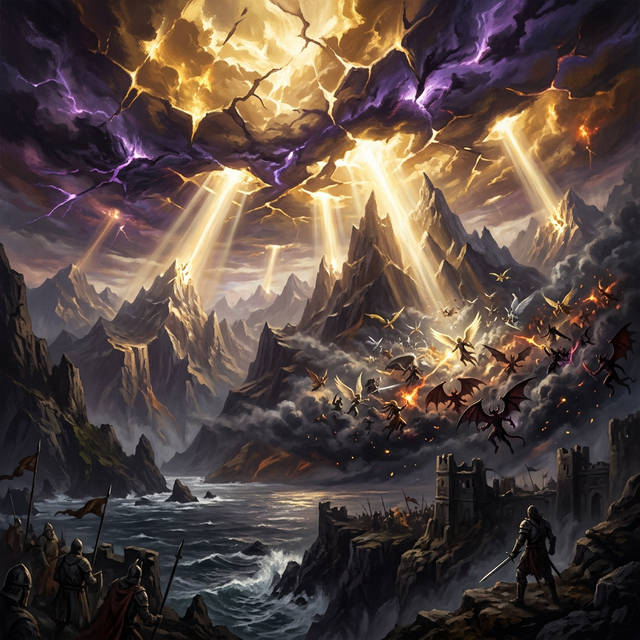

The Fracture of Heaven
Before the current age of Aethrya, before mortal civilizations rose across the Lost Hills, the heavens themselves became a battlefield. Across the planes existed countless pantheons: the gods of humans, elves, dwarves, drow, orcs, and stranger cosmic beings from distant realms. These gods ruled from celestial domains above reality, guiding mortal civilizations through prophecy, miracles, and chosen champions.
For ages this divine balance endured. The gods influenced the world but rarely fought one another directly. Yet beneath this order, tension grew. Rivalries between pantheons deepened as mortal wars escalated in their names. Each deity believed their vision for the world was correct.
The Fractures
Then the fractures began. Across the Astral Sea, strange distortions appeared—ripples in divine reality where magic behaved unpredictably. At first the gods dismissed them as anomalies. But the fractures multiplied. Divine domains trembled. Celestial pathways collapsed. Communication between gods and their followers weakened.
The fractures were not accidents.
They were created by entities older than the gods themselves—the Primordial Architects, beings born in the earliest moments of creation before divine consciousness emerged. To the Primordials, the wars of the gods threatened the stability of reality itself. If the divine conflicts continued, the multiverse would eventually collapse.
The Cataclysm
The Primordials weakened the divine realms, severing the connection between gods and their celestial thrones. As panic spread among the pantheons, accusations erupted into open conflict. Gods blamed one another for the fractures and war broke out across the Astral Sea.
Entire planes shattered as celestial armies clashed. Angels fought devils. Titans battled elemental lords. Mortal worlds trembled beneath the fallout of divine power. The conflict escalated until reality itself began to unravel.
The Judgment
At that moment the Primordials revealed themselves. Their judgment was swift. The gods had abused their power. The pantheons had become reckless stewards of creation.
Rather than destroy them, the Primordials imposed punishment. Every god was stripped of their celestial throne and cast into the mortal world. Each deity was bound within a mortal form, their divine essence restrained by cosmic law. Their memories remained intact, but their power was limited.
The gods would no longer rule from above. They would walk beside mortals.
Thus began the Hidden Age of Aethrya.